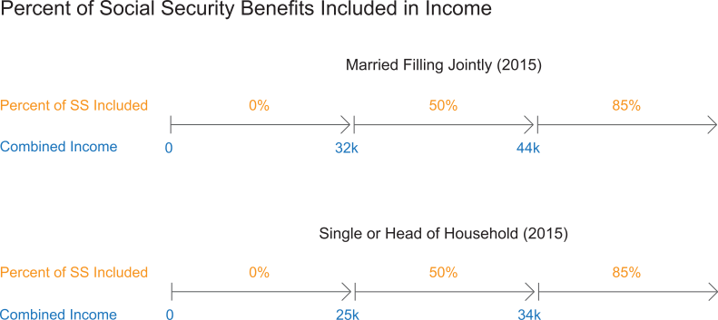

Lowering AGI is a Good Thing - Roth IRA Unique Planning Opportunities
Conventional wisdom holds that current and future income tax rates should be the driver in deciding between Roth and non-Roth contributions during the accumulation period. Conventional wisdom is not wrong; however, it may be superficial. There are other valuable and unique Roth IRA planning opportunities seldom appreciated by advisors much less articulated to clients.
Each of the three unique opportunities discussed below have a common theme – saving money by reducing a client’s adjusted gross income through Roth IRA distributions. Click each opportunity to learn more.
Social Security retirement benefits may or may not be taxable. Between 0% and 85% of retirement benefits must be included in gross income for tax purposes based upon a specialized calculation of AGI referred to as combined income.

Here is how your client could save over $5,000 not just once, but annually in income taxes on Social Security retirement benefits.
Your client could potentially save thousands of dollars by understanding the effect of Roth IRA distributions upon the NIIT.
The year 2013 ushered in an unprecedented Medicare tax on unearned income such as investment income. This tax may be referred to as either the 3.8% Net Investment Income Tax (NIIT) or the 3.8% Medicare Surtax. The NIIT is assessed against the lesser of AGI in excess of an indexed amount or net investment income.
Distributions from Traditional IRAs and most employer-sponsored retirement plans are not considered investment income subject to the NIIT. Yet such distributions can indirectly cause additional NIIT because they are included in a taxpayer’s income. Here is how that works.
- Distributions from Traditional IRAs and most employer-sponsored retirement plans increase a client’s AGI.
- Increases to AGI may result in additional NIIT because the NIIT is assessed against the lesser of AGI in excess of a threshold amount or net investment income.
Roth IRA distributions are excluded from taxable income and consequently do NOT increase a taxpayer’s adjusted gross income. As a result, taxpayers taking Roth distributions instead of taxable distributions may reduce or even eliminate the 3.8% NIIT.
 Planning Tip
Planning Tip
The NIIT is assessed only upon taxpayers with the following:
- AGI above a threshold amount, and
- Net investment income
When would anyone ever overpay for health insurance premiums? Whenever they fail to take advantage of the Roth IRA to reduce those premiums that is when! Premiums for Medicare Parts B and D are means tested. Means testing is a term applied to the increase in premiums based upon an individual’s or couple’s income.
Medicare Part B covers physician services and outpatient care. Part B coverage requires payment of a monthly premium that varies dramatically based upon your client’s modified AGI. Joint income tax return filers with modest AGIs pay as little as $1,461 (2016) per year while higher AGI joint filers may pay over 320% more annually ($4,678 in 2016).
Medicare Part D covers prescription drug costs and requires payment of a monthly premium as well. The monthly Part D premium is also means tested. The premium increases as modified AGI increases - a married couple’s annual premium can increase approximately $1,500 at higher AGI levels.
Roth IRA distributions do not increase modified AGI and, so far as Medicare Parts B and D premiums go, happiness is a low modified AGI!
The Crystal Ball
Our goal in this discussion is to raise your awareness rather than bog you down with the details of every possible permutation of the foregoing opportunities. The scope of this course does not permit an exhaustive presentation of all tax, Social Security, and Medicare variables that may apply to your client’s individual situation. We encourage consultation with your in-house experts before making specific recommendations to clients. In addition, your client should consult their CFP® Certificant, CPA or professional tax advisor before any planning decisions are made.